The conference talk, given at SGP 2026 in Bern. It covers how the two corpora were built, why the captions are grounded in construction history, and what still does not work.

Abstract
Computer-Aided Design (CAD) boosts modern manufacturing, yet design reuse remains constrained by the absence of large, openly available CAD repositories with rich multi-modal annotations suitable for search/retrieval. Recent large-scale efforts to annotate public datasets rely on hash-based redundancy removal that leaves no semantic structure, and on captioning by Vision-Language Models (VLMs) using rendered images alone, which struggles to capture geometric and procedural information. We introduce MM-CAD, a multi-modal CAD dataset designed to level-up retrieval and retrieval-augmented generation models for engineering geometry, comprising two complementary parts. MM-CAD:A brings 33,816 unique CAD models from eleven widely used benchmark datasets under a common identifier scheme, with isometric renderings, point clouds, and humanly-curated multi-level text captions, and 4,376 real hand-drawn user sketches among others. MM-CAD:B curates 192,626 models from the 1M-model ABC corpus through a seven-stage pipeline centered on Manifold-Aware Adaptive Sampling (MAAS), which organizes models into semantically coherent neighborhoods rather than merely removing duplicates, directly supplying the hard negatives that contrastive retrieval training requires. Every retained model is annotated through a metadata-grounded pipeline that conditions caption generation on parsed construction sequences rather than rendered views alone, producing three-level text descriptions, multi-level contour sketches, a hierarchical application taxonomy, and photorealistic in-context images that largely preserve source CAD geometry, a modality not previously available at this scale on CAD data. We further introduce a joint retrieval architecture that aligns sketch, text, image, B-Rep, and point cloud encoders in a single latent space through Matryoshka-nested contrastive objectives, establishing the first unified cross-modal retrieval benchmark for large-scale CAD.
Five aligned modalities
Every retained model carries the same identifier across geometry and every human-friendly query modality:
 Render
Render Point cloud
Point cloud B-Rep
B-Rep Sketch
Sketch Photoreal
Photoreal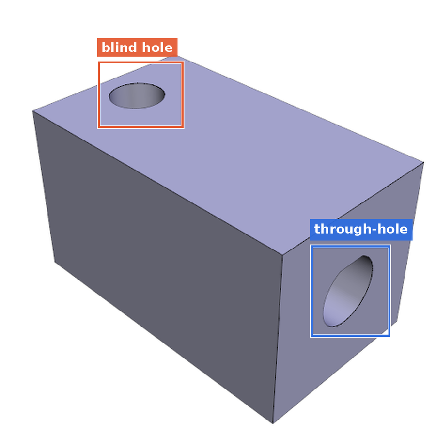
Grounded textHow grounded are the captions?
The usual approach shows a VLM a render and asks it to describe the part. MM-CAD:B instead parses each ABC model's FeatureScript construction sequence and conditions the caption on it. The sequence knows what the render cannot show: that a hole is blind rather than through, that a taper is a declared 5° draft rather than a loft, that a circular pattern has exactly 54 instances.
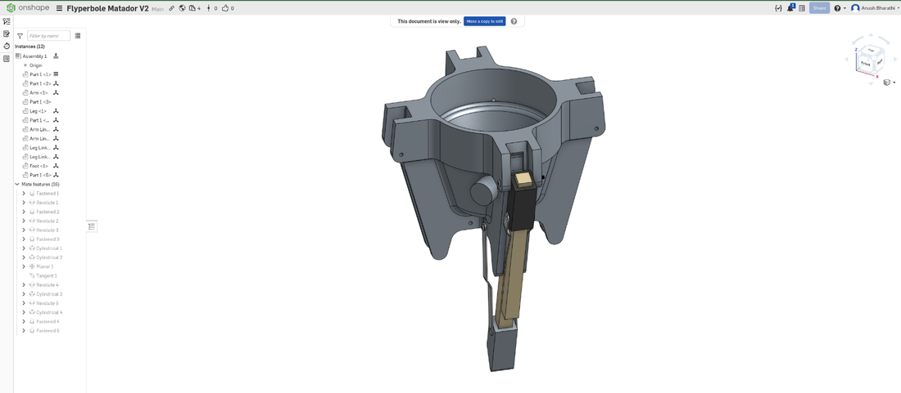
"54-tooth" comes from the geometry rather than from counting pixels in a render.Feature-level grounding, model by model
Each caption phrase below points at a named feature in the construction sequence, not at a guess from the outline:
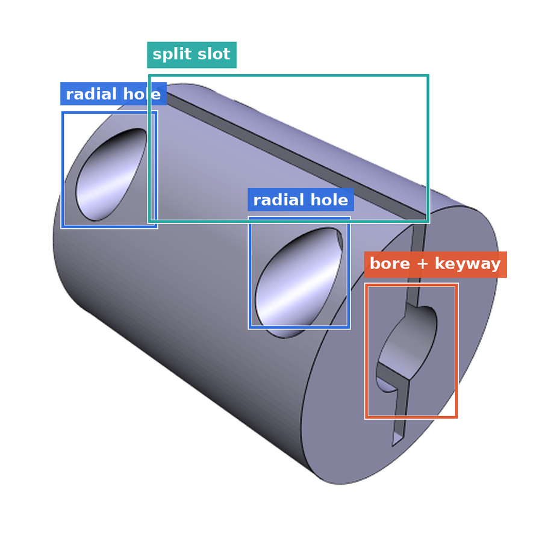
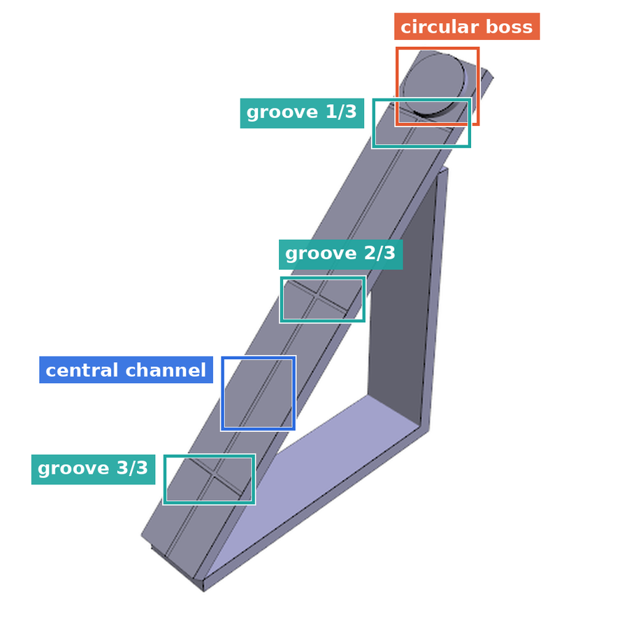
Head-to-head: same model, same VLM, one difference
Grounded, full pipeline
Gemini 3 Pro + parsed FeatureScript
A square block serving as a base, with a central, short cylindrical boss on its top surface. A larger, tapered cylindrical post with a 5-degree draft angle extends vertically from the boss, culminating in a flat, circular top face.
Ablation, construction context removed
same VLM, renders only
A transition piece composed of a square prismatic base supporting a central lofted section… from a circular profile at its bottom to an elliptical profile at its top. A fillet joins the base of the lofted section to the top face of the square base.
✗ invents a loft. The sequence is one tapered extrude with a declared 5° draft, and the top face is circular, not elliptical
✗ the boss vanishes, replaced by an invented fillet
✓ the base it can see, it gets right. The failure is blindness, not the VLM
Three more ablation cases follow the same pattern: uid 83059 calls both holes intersecting through-holes when one is blind; uid 213 invents threads and flips the hole orientation; uid 84167 reports a "2×2 grid of grooves" where the model has one central channel and three transverse grooves. In blind human evaluation the grounded captions were rated Very/Extremely Accurate 85.7% of the time.
Photorealistic images, paired to source geometry
FLUX.2-Klein conditioned on the source render, so the synthesized photograph keeps the part's geometry rather than inventing a plausible-looking object. 129,679 released images; blind human raters scored geometric fidelity 3.64/4 and material realism 3.74/4. Source CAD render on the left, synthesized image on the right:
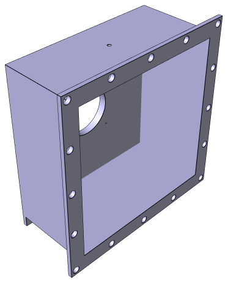
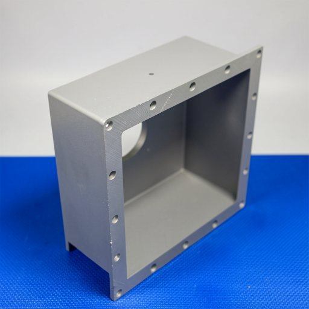
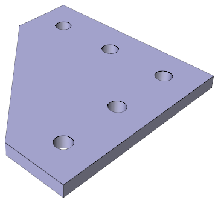
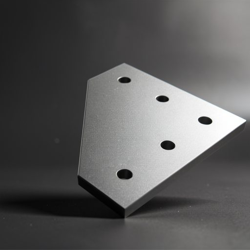
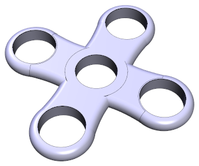
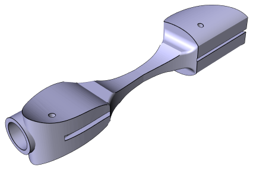
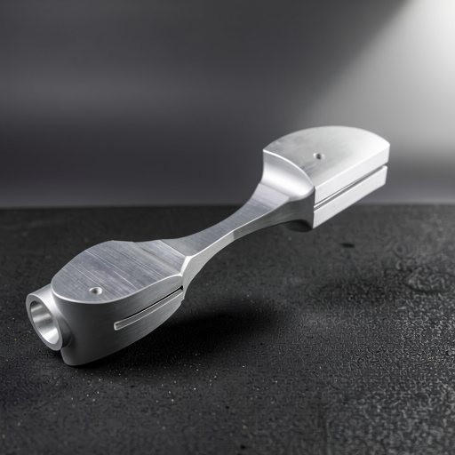
Sketches, style-diverse by construction
A retrieval system fielding sketch queries has to survive whatever a user actually draws. MM-CAD:A contributes 4,069 real human sketches (2,996 look-and-drawn, 1,073 traced); MM-CAD:B carries four synthetic styles per model, so no encoder can overfit to a single line aesthetic. Same part, five renderings:
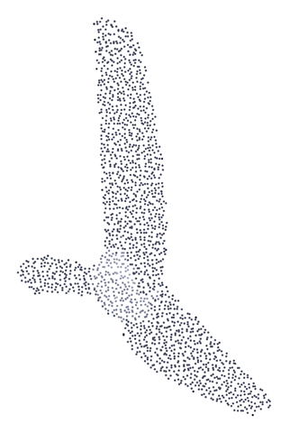
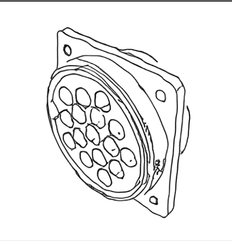
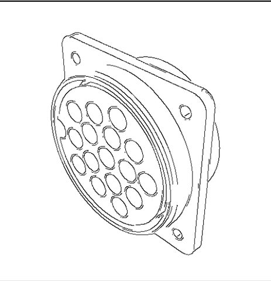
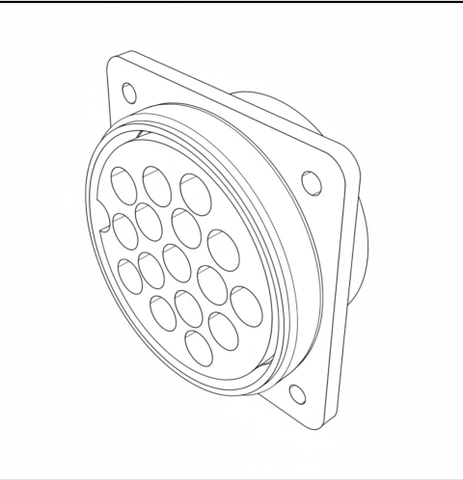
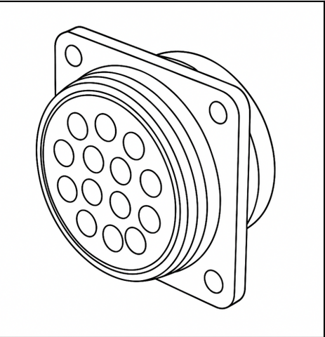
Blind raters scored sketch completeness 3.73/4 and recognizability 3.67/4. The contour network trained on MM-CAD:A transfers to MM-CAD:B with no retraining.
The corpus, as the encoder sees it
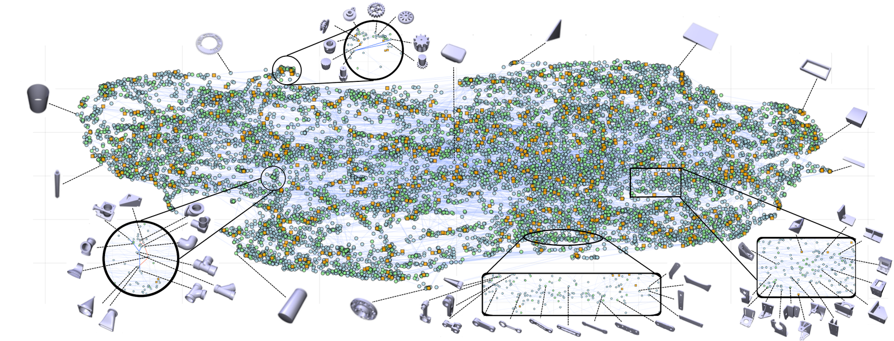
Application taxonomy

The full pipeline (dual semantic and PPMI co-occurrence embeddings, UMAP, recursive Dirichlet-Process mixtures with BIC-validated splits, bottom-up naming) is released in taxonomy/, and the built tree ships with the dataset under mmcad_b/taxonomy/.
Dataset FULLY RELEASED
MM-CAD:A · 33,816 models
Unified from eleven benchmarks: MCB, DeepCAD, Thingi10K, ShapeNetV2, Fusion360, PSB, IFCNet, CADParser, ModelNet40, CADNET, ESB.
| Renders (per view) | 33,816 |
| Point clouds | 32,001 |
| Meshes | 31,616 |
| Contour / Canny sketches | 25,026 / 1,814 |
| Human sketches (drawn / traced) | 2,996 / 1,073 |
| Human text annotations | 22,684 |
Split 27,048 / 3,376 / 3,392. ShapeNetV2 meshes are excluded (upstream license); its derived modalities are included.
MM-CAD:B · 192,626 models
Curated from the 1M-model ABC corpus through the seven-stage MAAS pipeline, entirely on a single RTX 4090.
| STEP B-Rep | 192,625 |
| Point clouds (10K + normals) | 192,625 |
| Three-level text annotations | 192,625 |
| Renders (ISO1 / ISO2 / top) | 192,541 / 192,112 / 188,566 |
| Contour sketches (ISO1 / ISO2) | 189,908 / 189,861 |
| Photorealistic images | 129,679 |
Split 173,363 train / 19,263 validation. Large modalities ship as uncompressed tar shards with per-shard SHA-256 checksums.
Everything is on Hugging Face: huggingface.co/datasets/exanos/MMCAD
from datasets import load_dataset
a = load_dataset("exanos/MMCAD", "mmcad_a", split="train")
b = load_dataset("exanos/MMCAD", "mmcad_b", split="train")Both corpora are keyed by a global uid; every asset is located through its *_archive and *_member columns, and an empty path means that modality is unavailable for that record.
Joint cross-modal retrieval benchmark
Five encoders share one d=768 Matryoshka space over {128, 256, 512, 768}: text (EmbeddingGemma-300M), sketch (ViT-Base), photoreal image (SigLIP-Base), B-Rep (BRepFormer), and point cloud (DGCNN). Query vectors are summed and renormalized, with no learned fusion head. Trimodal queries win every configuration:
| Text | Sketch | Image | R@1 | R@5 | R@10 | R@25 |
|---|---|---|---|---|---|---|
| ✓ | × | × | 15.42 | 34.86 | 44.61 | 57.93 |
| × | ✓ | × | 32.69 | 57.86 | 67.31 | 78.59 |
| × | × | ✓ | 33.20 | 55.24 | 64.20 | 74.81 |
| ✓ | ✓ | × | 39.97 | 66.07 | 74.46 | 83.69 |
| ✓ | × | ✓ | 38.10 | 61.94 | 70.63 | 80.30 |
| × | ✓ | ✓ | 41.81 | 66.31 | 74.68 | 83.79 |
| ✓ | ✓ | ✓ | 45.91 | 70.29 | 77.86 | 85.91 |
Recall on the MM-CAD:B validation set (B-Rep gallery, N=19,263, d=768). Every fusion beats its best constituent. Nothing directly supervises the point-cloud gallery, so its transfer comes out of the shared space on its own. Matryoshka truncation to d=128 moves trimodal R@1 only from 45.91 to 45.50, so a d=128 FAISS index serves interactive queries at negligible cost; released checkpoints expose all four nested dimensions.
Pretrained checkpoints
Three checkpoints are released under checkpoints/: the Stage-1 joint model (text + B-Rep + point cloud), and the two Stage-2 encoders aligned to frozen B-Rep anchors (sketch, photorealistic image). All expose the four nested dimensions.
python inference.py --query "servo mount with four bolt holes" --dim 128
python inference.py --query "bevel gear" --sketch sketch.png --image photo.jpgWhere it still fails
Retrieval matches silhouette, not feature. A query for "herringbone gear · ten lightening holes" returns a water-bottle base at rank 1 because radial perforations look like lightening holes. The correct gear sits at #77. "Symmetrical V-groove pulley" returns a toroidal wheel; the correct part is at #426. Feature terms still do not ground to geometry. We release that gap as a benchmark task instead of hiding it.
Citation
@article{bharathi2026mmcad,
title = {MM-CAD: A Multi-Modal CAD Dataset and Benchmark for Cross-Modal Geometric Learning},
author = {Bharathi, Anush and Ananthakrishnan, A and Muthuganapathy, Ramanathan},
journal = {Computer Graphics Forum},
year = {2026},
publisher = {Wiley},
volume = {45},
number = {5},
doi = {10.1111/cgf.70523},
note = {Proc. SGP 2026}
}